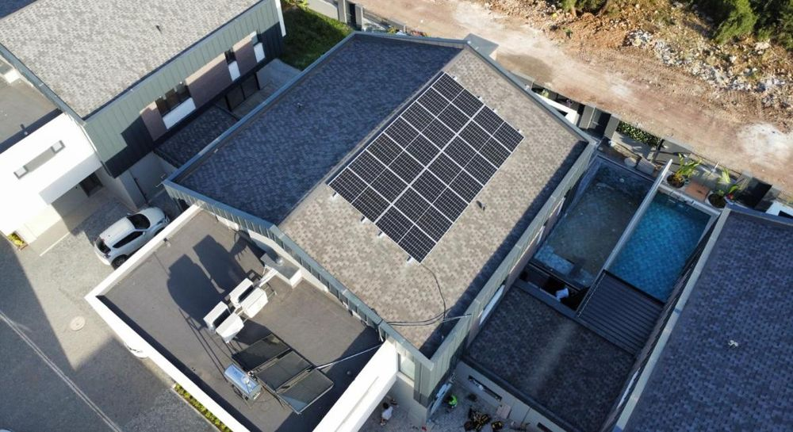
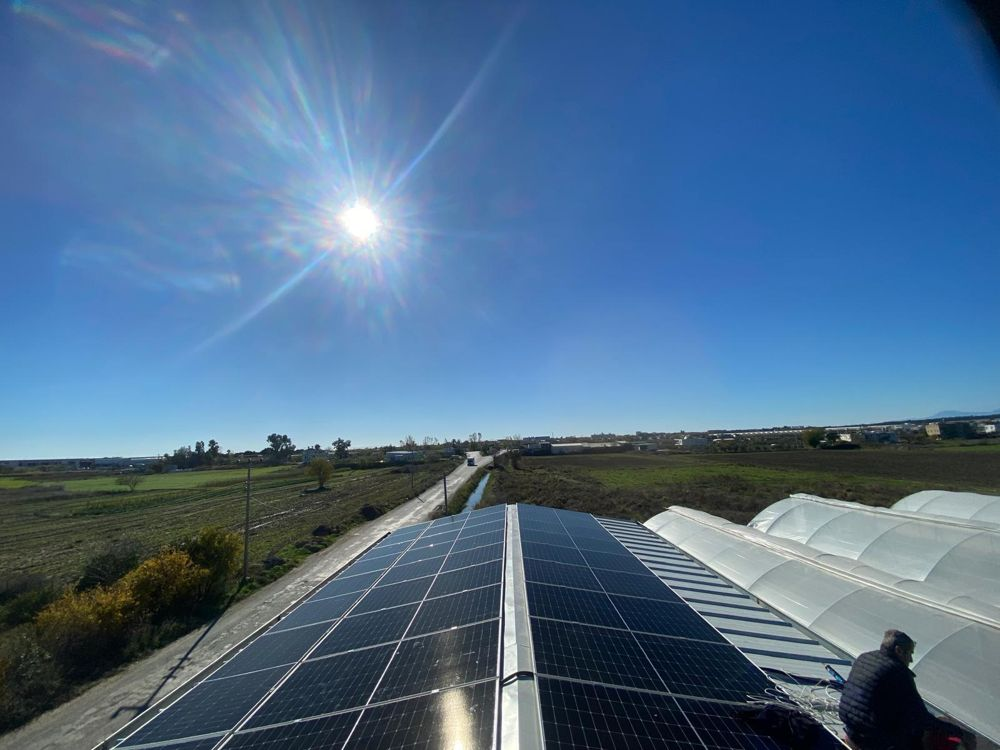
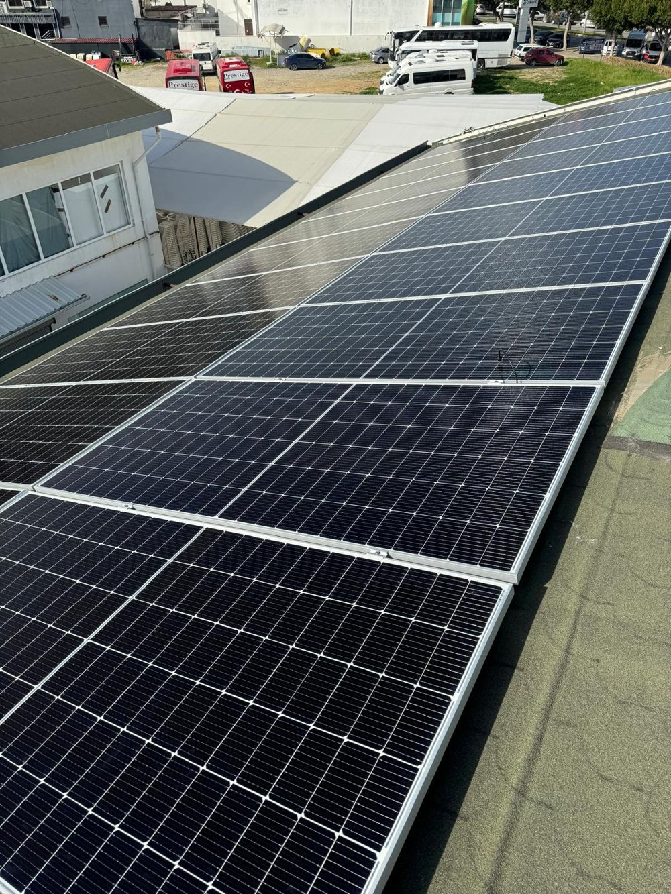
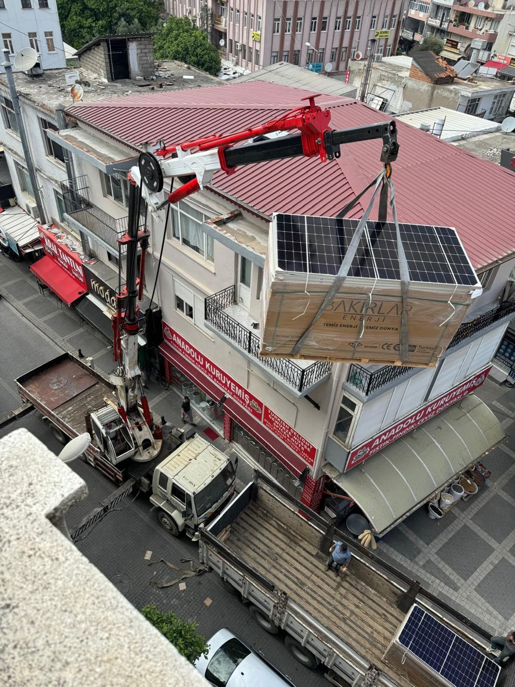
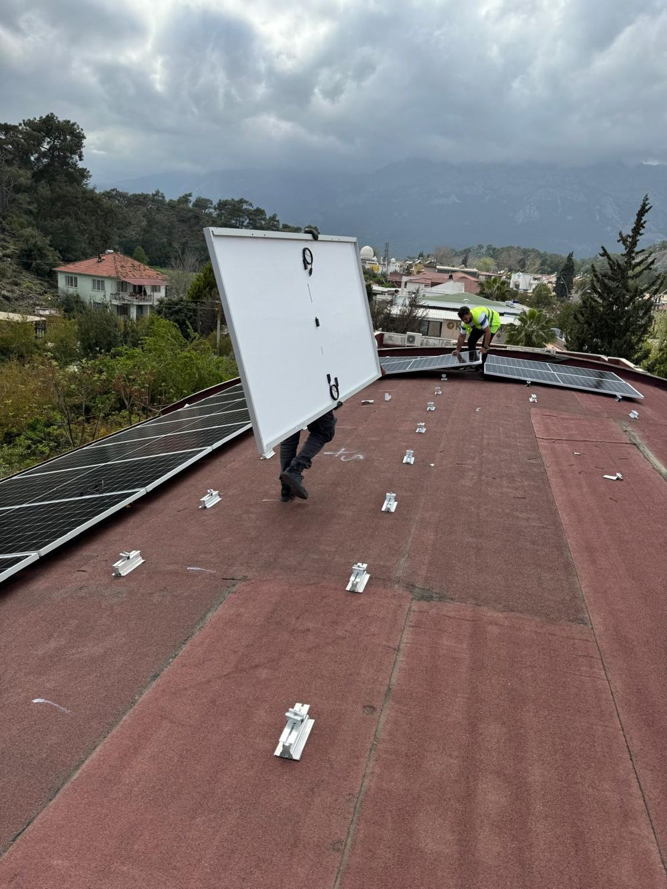
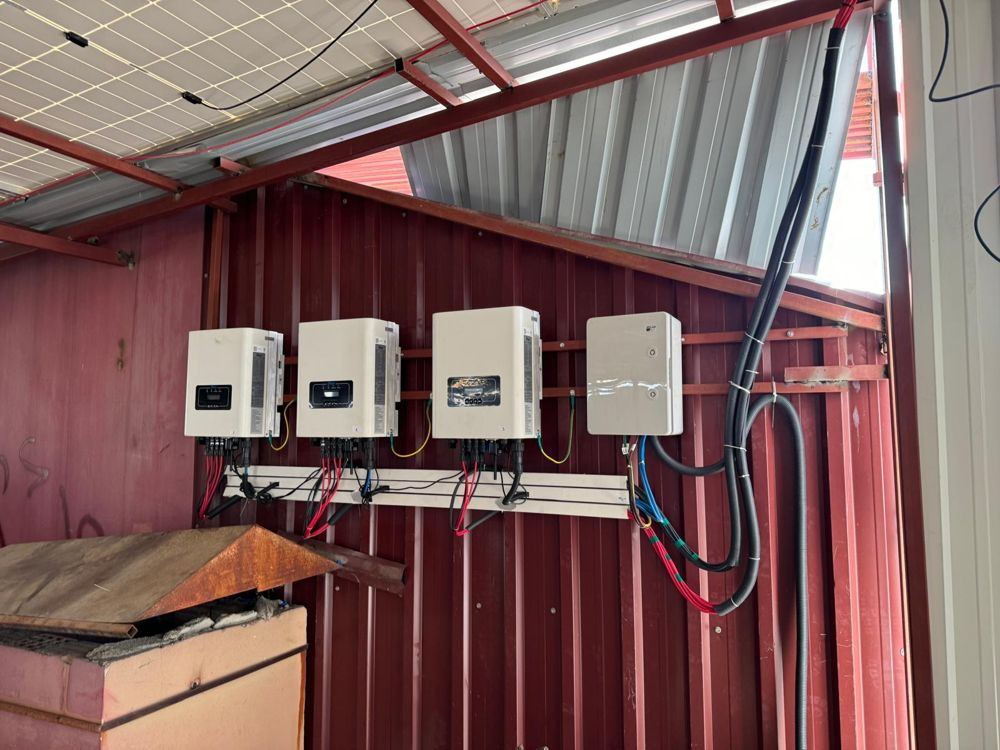
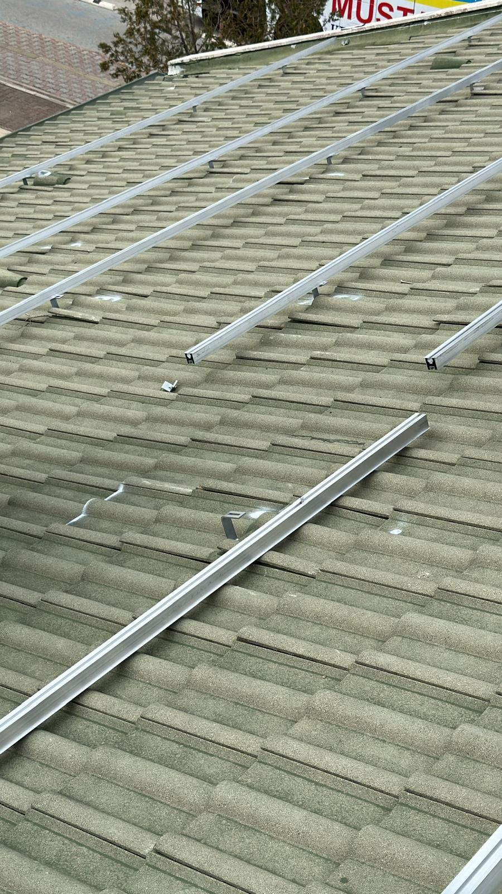
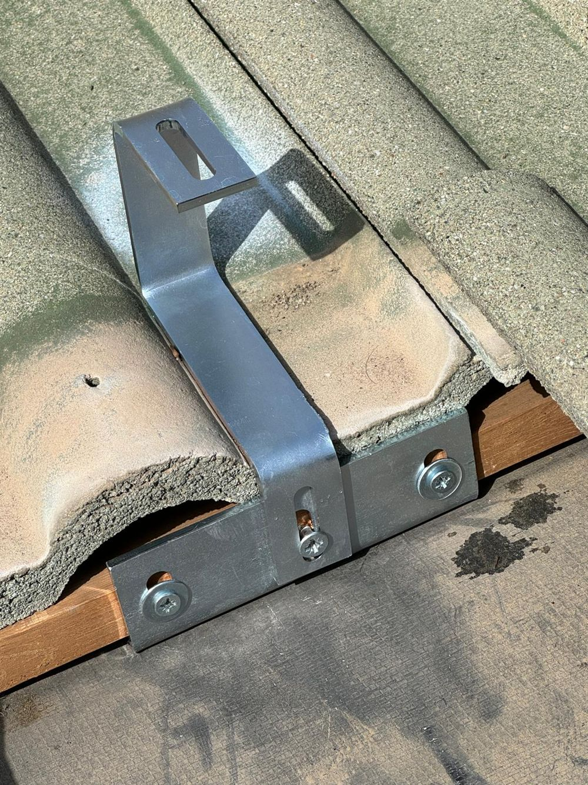

On-Grid
Kemer Villa Projesi
Kemer'de çift eğimli kiremit çatılı villaya kurulan şebeke bağlantılı konut sistemi.
Sanayiden tarıma, otelden soğuk hava depolarına kadar farklı sektörlerde devreye aldığımız güneş enerjisi santrallerinden bir seçki.
Kemer'de çift eğimli kiremit çatılı villaya kurulan şebeke bağlantılı konut sistemi.
Sera ve tarla sulaması için sera çatısına kurulan güneş enerji santrali.
Büyük çaplı sanayi tesisi çatısına kurulan on-grid güneş enerji santrali.
Manavgat'ta büyük çaplı fabrika çatısına kurulan 1.2 MW kapasiteli güneş enerji santrali.
Toroslar manzaralı konumda vinç ekipmanıyla gerçekleştirilen profesyonel kurulum.
Şehir merkezinde ticari bina çatısına kurulan şebeke bağlantılı güneş sistemi.
Alanya'da büyük sanayi tesisinin çatısını kaplayan yüksek verimli GES kurulumu.
Depo ve üretim tesisi çatısında çift taraflı panel uygulaması.
Zemine bağlı arazi tipi kurulum ile tarımsal sulama pompası için güneş enerji sistemi.
Daha fazla referans ve detaylı proje dosyaları için bizimle iletişime geçin.
Kurulum ve mühendislik çalışmalarımızdan kareler. Büyütmek için tıklayın.








Çatınız veya araziniz için ücretsiz fizibilite çıkaralım.